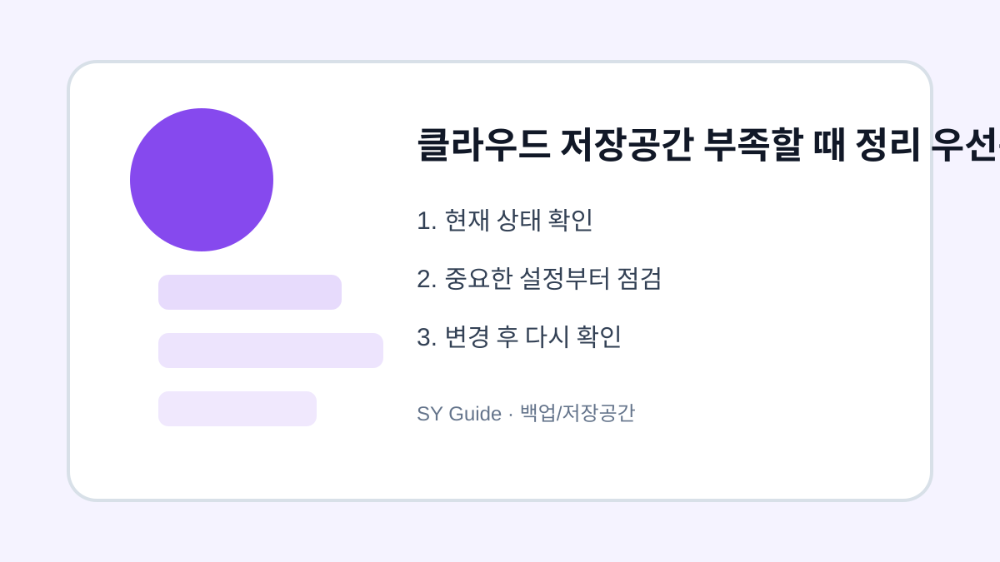

클라우드 저장공간 부족할 때 정리 우선순위
클라우드 저장공간이 부족할 때 무엇부터 지워야 하는지 우선순위로 정리합니다.

클라우드 저장공간이 부족하다는 알림이 오면 무작정 사진부터 지우기 쉽습니다. 하지만 실제로는 동영상, 메일 첨부파일, 휴지통, 중복 파일이 더 큰 용량을 차지하는 경우가 많습니다. 정리 순서를 정하면 필요한 자료를 덜 건드리고 공간을 확보할 수 있습니다.
큰 파일부터 확인하기
저장공간 관리 화면에서 용량이 큰 파일을 먼저 봅니다. 오래된 동영상, 다운로드한 압축 파일, 중복 백업 파일은 정리 효과가 큽니다. 문서 파일 여러 개보다 동영상 하나가 더 큰 경우가 많으므로 큰 파일 순서가 효율적입니다.
휴지통과 메일 첨부파일
삭제한 파일도 휴지통에 남아 있으면 공간을 계속 차지할 수 있습니다. Gmail이나 클라우드 메일을 함께 쓰는 경우 큰 첨부파일이 저장공간에 포함될 수 있습니다. 단, 휴지통을 비우면 복구가 어려우니 먼저 필요한 파일을 확인하세요.
| 정리 대상 | 효과 | 주의점 |
|---|---|---|
| 동영상 | 큼 | 백업 후 삭제 |
| 중복 파일 | 중간 | 최신본 확인 |
| 휴지통 | 즉시 확보 | 복구 불가 |
| 메일 첨부 | 계정별 다름 | 중요 메일 확인 |
삭제하거나 옮기기 전 마지막 확인
- 큰 파일 순서로 정렬하기
- 동영상은 다른 저장소에 복사 후 삭제하기
- 휴지통을 비우기 전 파일 확인하기
- 메일 첨부파일도 함께 확인하기
- 정리 후 자동 백업 설정을 다시 점검하기
클라우드는 편리하지만 무한한 공간은 아닙니다. 정리 기준을 만들어두면 매번 요금제를 올리기 전에 필요한 공간을 확보할 수 있습니다.
클라우드 저장공간을 정리할 상황
클라우드 용량 부족 알림이 뜨면 사진, 백업, 대용량 첨부파일 중 무엇이 공간을 차지하는지 먼저 봐야 합니다. 무작정 삭제하면 여러 기기에서 함께 사라질 수 있어 서비스별 동기화 방식을 확인해야 합니다.
클라우드 정리에서 위험한 실수
원본과 사본의 위치를 모른 채 삭제하면 복구가 어려울 수 있습니다. 큰 파일을 내려받아 보관할지, 오래된 백업을 지울지, 구독 용량을 조정할지 순서를 정한 뒤 진행하는 편이 안전합니다.
저장공간 정리 관련 설정을 먼저 확인해야 하는 이유
저장공간 정리 관련 설정은 단순히 메뉴 하나를 켜고 끄는 문제가 아니라, 실제 사용 흐름에서 어떤 불편을 줄이려는지 먼저 정해야 합니다. 같은 메뉴라도 기기 제조사, 운영체제 버전, 앱 업데이트 상태에 따라 이름이 달라질 수 있으므로 현재 화면을 기준으로 차근차근 확인하는 것이 좋습니다.
저장공간 정리에서 자주 생기는 실수
클라우드 저장공간을 정리할 상황을 정리할 때는 되돌리기 어려운 삭제나 계정 변경을 마지막 단계로 미루는 것이 좋습니다. 먼저 표시, 알림, 권한처럼 쉽게 복구할 수 있는 항목부터 확인하면 실수 부담을 줄일 수 있습니다.
저장공간 정리 점검 후 다시 볼 부분
클라우드 저장공간을 정리할 상황은 사용자마다 필요한 범위가 다르기 때문에, 자주 쓰는 앱과 계정부터 적용하는 편이 좋습니다. 바꾸기 전 화면과 바꾼 뒤 결과를 비교하면 어떤 설정이 실제로 도움이 됐는지 판단하기 쉽습니다.